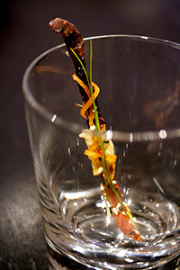
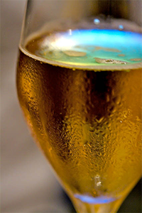

Wine
List changes daily
Many wines are in limited supply
Corkage $25 per bottle, $45 per magnum
- NV Chartogne-Taillet, Cuvée Sainte-Anne 92.
- NV Pierre Peters, Blanc de Blancs, Cuvée de Réserve, Grand Cru 108.
- NV Larmandier-Bernier, Tradition, Premier Cru 120.
- 2002 L. Aubry Fils, La Nombre d'Or Campanae Veteres Vites 138.
- NV Jacques Selosse, Initial, Grand Cru, Blanc de Blancs 220.
- NV H. Billiot, Brut Rosé 128.
- NV Vilmart & Cie Rosé, Cuvée Rubis 136.
- NV Prosecco di Valdobbiadene, Sorelle Bronca 36.
- 2007 Cava, Reserva, L'Hereu de Raventós i Blanc 44.
- 2002 Vouvray Sec, Petillant, Gaston Huet 62.
- 2009 Vin Gris of Pinot Noir, Robert Sinskey, Carneros 49.
- 2008 Joise Rosé, British Columbia, Canada 38.
- 2007 Chavignol Rosé, Pascal Cotat 93.
- 2008 Bordeaux Rosé, Château Bonnet, André Lurton 29.
- 2009 Cassis Rosé, Domaine du Bagnol 52.
- 2009 Bandol Rosé, Domaine Tempier 56.
- 2007 Palette Rosé, Château Simone 88.
- 2009 Txakolina Getariako, Rubentis, Ame¬ztoi 44.
- 1998 Rioja Rosé, Viña Tondonia, R. Lopez Heredia 58.
- 2009 Merry Edwards Sauvignon Blanc, Russian River Valley 36.
- 2009 Araujo Sauvignon Blanc, Eisele Vineyard, Napa Valley 58.
- 2008 Robert Sinskey Pinot Blanc, Los Carneros 42.
- 2008 Navarro Chardonnay, Premiére Reserve, Anderson Valley 24.
- 2004 Ribolla Giailla, Clos du Breuil, François Chidaine 32.
- 2007 Sancerre, Lucien Crochet 34.
- 2008 Chablis Premier Cru, Vau de Vey, Domaine Hervé Azo 32.
- 2008 Grüner Veltiner, Steinsetz, Schloss Gobelburg 38.
- 2008 Riesling, Zöbinger Heiligenstein, Bründlmayer 42.
- 2007 Merry Edwards Pinot Noir, Russian River Valley 46.
- 2007 Ridge Zinfandel, Geyserville, California 32.
- 2007 A. Rafanelli Zinfandel, Dry Creek Valley 36.
- 2006 Ridge Cabernet Sauvignon, Santa Cruz Mountains, California 45.
- 2007 Baker Lane Syrah, Sonoma Coast 42.
- 2007 Peay Syrah, Les Titans, Sonoma Coast 52.
- 2005 Mercurey Premier Cru, Domaine du Meix-Foulot 39.
- 2006 Volnay, Les Grands Poisots, Domaine Louis Boillot et Fils 42.
- 2007 Côte-Rôtie, Classique, Domaine Clusel-Roch 66.
© 2014 Thyme Restaurant, All Rights Reserved.